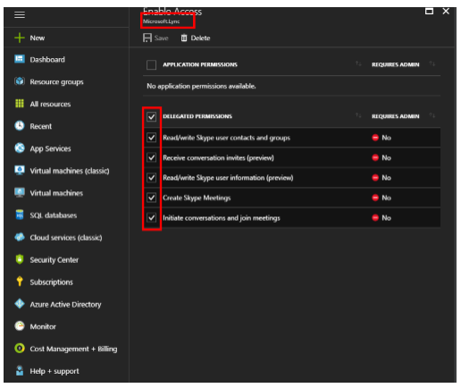
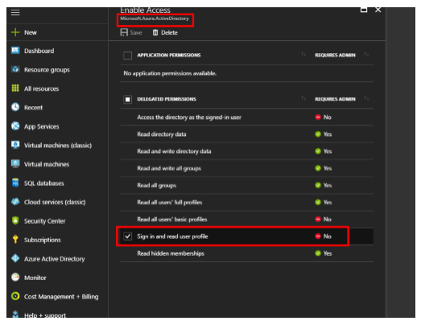
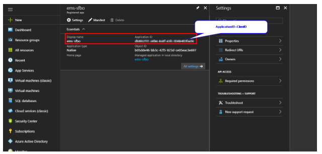

Configure Skype for Business
This topic provides information on the following:
Skype for Business must be configured in the EMS Desktop Client. The process below applies to both EMS Mobile App and EMS Web App.
Prerequisites
- Microsoft Azure Active Directory.
- User performing this task needs admin to Azure environment.
- EMS Conferencing URI (mostly to be something like this (https://servernamefqdn/web app directory/ConferencingLogin.aspx/). This URI must be verifiable and accessible externally.
Deployment Types
There are three deployment types for Skype for Business:
-
On Premise: This deployment for Skype for Business does not retain a token and requires authentication every 8 hours. As a result, you will be asked to sign in every 8 hours.
-
Online: This deployment retains the token so only an initial authentication is required.
-
Hybrid: This deployment has the same authentication method as the Online deployment.
Skype for Business Authentication and Authorization Sequence Diagram

Note: Ensure that you have Exchange web services component deployed in your environment.
Integrate with Skype for Business Server
- Set the authentication for Skype for Business.
- Navigate toSystem Administration>Settings>Parameters>Everyday User Applicationstab.
- From the Area dropdown, chooseSkype for Business.
Everyday User Applications Tab

For On Premise deployment
- Set the Skype for Business Auto Discover URL parameter. This parameter performs autodiscovery to find the appropriate server to communicate with. For more information regarding setting this parameter, see theSkype for Business Root URL documentation.
- Set the Skype for Business Server Authentication Method. This parameter determines the authentication type that is used to generate a token.
- The Skype for Business (On Premise) server supports three authentication methods:
- ADFS (Active Directory Federation Services) (not supported in EMS Mobile App)
- NTLM/Windows Authentication
- UserName/Password
Parameter Dialog

For Online Deployment
- Create a Skype for Business App in Azure AD:
- Sign into the Azure Management portal.
- Select Azure Active Directory.
- Select App registration.
- Click New Application registration.
- Enter the required information, including:
- Name of your application (e.g., EMS SFB).
- Application type > Native.
- Conferencing URI (please ensure the trailing slash).
- Click Create.

- Modify the Skype for Business App permissions:
- Click on the Skype for Business App from the App Registrations.
- Click Required Permissions.
- Click Add.

- Select all permissions for Skype for Business online.

- Select Windows Active Directory and choose only "Sign in and read user profile."

- Click Save.
Note: From this Skype for Business application, users can add multiple URI (e.g., for testing or production URI) without creating separate Skype for Business apps for each environment.
- Note the Client ID. This will need to be added to EMS parameters.

Configure the Reply URL for EMS Mobile App (Skype for Business Online deployment):
- Refer to the steps outlined in this documentation.
- In the Reply URL field, insert emssoftware://skype/x.
Warning: The cache must be cleared in Platform Services and the EMS Web App whenever parameter changes are made in the EMS Desktop Client.
Configure the Reply URL for EMS Web App:
- In the Reply URL field, insert the root URL:
- Skype for Business Reply URL = https://loripsor/ConferencingLogin.aspx (where EMS Web App URL = htttps://loripsor.emswebapp.com and Root URL = loripsor)
Note: When updating the EMS Web App, re-enter/reissue the secret key (from EMS Platform Services) in the new web.config file. This hashed secret key is also stored in tbl.client.
You may need to add https://login.microsoftonline.com and EMS Web App server in the same Internet zone. This is how Microsoft verifies and sends the token key back to EMS Web App/Platform Services server.
Connect EMS Web App to Platform Services
In order to integrate with Skype for Business, EMS Web App must connect to EMS Platform Services.
- Navigate to the EMS Platform Services Admin Portal.
- Select Integrations. Under Clients, click on the EMS Web App link.
- Click the Reset Secret button and copy the generated Secret.
- In the web.config file located in the designated folder for your current version of EMS, insert the copied Secret ID into the value field.
<add key="platformServicesSecret" value="YourSecretID" />
Important: Cloud customers do not need to generate a Secret or insert it into the web.config file (Steps 3 through 4).
- Clear the cache in EMS Platform Services by navigating back to the EMS Platform Services Admin Portal and clicking the Clear Cache button.
- In the EMS Desktop Client, navigate to System Administration > Settings > Parameters > Everyday User Applications. Configure the Platform Services API URL parameter. Click Close.

Configure Skype for Business on Global Templates
- Log into EMS Desktop Client. Enable the global parameters for Skype for Business within EMS. Navigate toSystem Administration>Settings>Parameters>Everyday User Applicationstab.
- From the Area dropdown, chooseIntegration to Microsoft Exchange.
- SelectEnable Skype for Business. ClickEdit.
- The default value is No. Set the Description toYes.
- ClickOK.
- ClickClose.
Configuring Skype for Business on a Global Template

- Navigate toSystem Administration>Settings>Parameters>Everyday User Applications.
- From the Area dropdown, chooseSystem.
- SelectPlatform Services URL. ClickEdit.
- Enter the Value (enter the URL for Platform Services) (e.g., https://serverURL/{PlatformServicesName}.
- ClickOK.
- ClickClose.
-
- Navigate to System Administration > Settings > Parameters > Everyday User Applications.
- From the Area dropdown, choose Skype for Business.
- Select Enable Skype for Business. Click Edit.
- The default value is No. Set the Description to Yes.
- Click OK.
- Click Close.
Configure Skype for Business on a Process Template Level
Note: Changing the parameters on a template level will override the global settings.
To configure Skype for Business on a process template level:
- Navigate toConfiguration>Everyday User Applications>Everyday User Process Templates.
- ClickNew.
- In the Everyday User Application Settings, check the Enable Integration to Microsoft Exchange box.
- Navigate to theParameterstab.
- Filter the parameters by typing "Skype" in the Filter field.
- Click on theEnable Skype for Businessparameter and clickEdit. The Edit Parameter dialog box appears.
- The default value is No. SelectYesfrom the Enable Skype for Business dropdown. ClickOKon the Edit Parameter dialog box.
- ClickOKon the Everyday User Process Template box.
- ClickClose.
Configuring Skype for Business on a Process Template Level

Warning: The cache must be cleared in Platform Services and the EMS Web App whenever parameter changes are made in the EMS Desktop Client.
Configure Skype for Business on Existing Templates
To configure Skype for Business in existing templates:
- In the EMS Desktop Client, navigate toConfiguration>Everyday User Applications>Everyday User Process Templates.
- Click on the existing template for which you want to enable Skype for Business.
- ClickEdit. The template dialog box appears.
- Ensure that the Enable Integration to Microsoft Exchangebox is checked in the Everyday User Application Setting section.
- Navigate to theParameterstab.
- Filter the parameters by typing "Skype" in the Filter field.
- Click on theEnable Skype for Businessparameter and clickEdit. The Edit Parameter dialog box appears.
- The default value is No. SelectYesfrom the Enable Skype for Business dropdown.
- ClickOKon the Edit Parameter dialog box.
- ClickOKon the Everyday User Process Template box.
- ClickClose.
Configuring Skype for Business in an Existing Template

Warning: The cache must be cleared in Platform Services and the EMS Web App whenever parameter changes are made in the EMS Desktop Client.
Note: Once a Skype meeting is added to a reservation, a Skype meeting flag—indicating that the reservation has a Skype meeting—appears in the Booking Summary tab for the reservation in the EMS Desktop Client. Additionally, the Skype ID will appear in the Properties tab for the reservation. A reservation-level display field named Skype Meeting in the Query Builder will indicate there is a Skype meeting in the reservation.